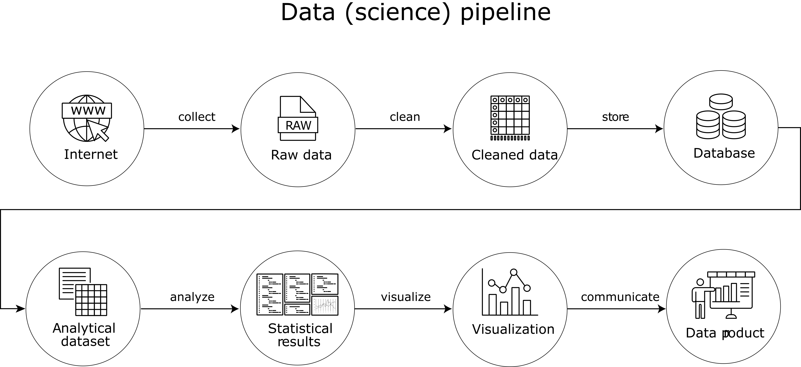

Big Data Analytics
Preface
Prerequisites
I Setting the Scene: Analyzing Big Data
1
Introduction
1.1
What is
big
in “Big Data”?
1.2
Approaches to analyzing Big Data
1.3
Content overview
2
Two domains of Big Data Analytics
2.1
A practical
big P
problem
2.2
A practical
big N
problem
2.2.1
OLS as a point of reference
2.2.2
The Uluru algorithm as an alternative to OLS
II Platform: Software and Computing Resources
3
Software: Programming with (Big) Data
3.1
Domains of programming with (big) data
3.2
Measuring R performance
3.3
Writing efficient R code
3.3.1
Memory allocation and growing objects
3.3.2
Vectorization in basic R functions
3.3.3
apply
-type functions and vectorization
3.3.4
Avoid unnecessary copying
3.3.5
Releasing memory
3.3.6
Beyond R
3.4
SQL basics
3.4.1
First steps in SQL(ite)
3.4.2
Joins
4
Hardware: Computing Resources
4.1
Components of a standard computing environment
4.2
Mass storage
4.2.1
Avoid redundancies
4.2.2
Data compression
4.3
Random access memory (RAM)
4.4
Combining RAM and hard-disk: virtual memory
4.5
CPU and parallelization
4.5.1
Naive multi-session approach
4.5.2
Multi-core and multi-node approach
4.6
GPUs for scientific computing
4.6.1
GPUs in R
5
Distributed Systems
5.1
MapReduce
5.1.1
Map/Reduce Concept Illustrated in R
5.1.2
Mapper
5.1.3
Reducer
5.2
Hadoop
5.2.1
Hadoop word count example
5.3
Spark
5.4
Spark with R
5.4.1
Data import and summary statistics
5.5
Spark with SQL
5.6
Spark with R + SQL
6
Cloud Computing
6.1
Cloud computing basics and platforms
6.2
Scaling up in the cloud
6.2.1
Scaling up with AWS EC2 and R/RStudio
6.2.2
Scaling up with GPUs
6.3
GPUs on Google Colab
6.4
AWS EMR: MapReduce in the cloud
III Applied Big Data Analytics
7
The Data Pipeline
8
Big Data Cleaning and Transformation
8.1
‘Out-of-memory’ strategies
8.1.1
Chunking data with the
ff
-package
8.1.2
Memory mapping with
bigmemory
8.2
Typical cleaning tasks
8.2.1
Data Preparation with
ff
9
Descriptive Statistics and Aggregation
9.1
Data aggregation: The ‘split-apply-combine’ strategy
9.1.1
Data aggregation with chunked data files
9.1.2
Cross-tabulation of
ff
vectors
9.2
High-speed in-memory data aggregation with
data.table
10
Data Collection and Data Storage
10.1
Gathering and compilation of raw data
10.1.1
NYC taxi data
10.2
Data import and memory allocation
10.3
Efficient local data storage
10.3.1
RDBMS basics
10.3.2
Efficient data access: indices and joins in SQLite
10.4
Connecting R to RDBMS
10.4.1
Creating a new database with
RSQLite
10.4.2
Importing data
10.4.3
Issue queries
10.5
Cloud solutions for (big) data storage
10.5.1
Easy-to-use RDBMS in the cloud: AWS RDS
10.5.2
Database server in the cloud: MariaDB on an EC2 instance
11
(Big) Data Visualization
11.1
Data exploration with
ggplot2
11.2
Excursus: modify and create themes
11.2.1
Create your own theme: simple approach
11.2.2
Implementing actual themes as functions.
11.3
Visualize Time and Space
11.3.1
Preparations
11.3.2
Pick-up and drop-off locations
11.4
Excursus: change color schemes
12
Bottle Necks in Local Big Data Analytics
12.1
Case study: Data Import and Memory Allocation
12.2
Case Study: Loops, Memory, and Vectorization
12.2.1
Preparation
12.2.2
Naïve Approach (ignorant of R)
12.2.3
Improvement 1: Pre-allocation of memory
12.2.4
Improvement 2: Exploit vectorization
12.3
Case study: Bootstrapping and Parallel Processing
12.3.1
Parallelization with an EC2 instance
12.4
Case Study: Efficient Fixed Effects Estimation
13
GPUs and Machine Learning
13.1
Tensorflow/Keras example: predict housing prices
13.2
Data preparation
13.3
Model specification
13.4
Training and prediction
13.4.1
A word of caution
14
Analyzing Big Data with Spark and R
14.1
Simple regression analysis
14.2
Machine learning for classification
14.3
Building Machine Learning Pipelines with R and Spark
14.3.1
Set up and data import
14.3.2
Building the pipeline
14.4
Text analysis with Spark
Appendix
A
Appendix A
A.1
GitHub
A.1.1
Initiate a new repository
A.1.2
Clone this course’s repository
A.1.3
Fork this course’s repository
B
Appendix B
B.1
Data types and memory/storage
B.1.1
Example in R: Data types and information storage
B.2
Data structures
B.2.1
Vectors vs Factors in R
B.2.2
Matrices/Arrays
B.2.3
Data frames, tibbles, and data tables
B.2.4
Lists
B.3
R-tools to investigate structures and types
C
Appendix C
C.1
Install Hadoop (on Ubuntu Linux)
References
umatter.github.io
Big Data Analytics
Chapter 7
The Data Pipeline
